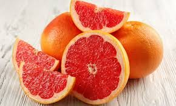
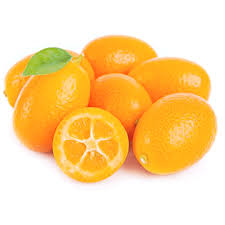
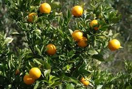

LARANJAS
 >
> A laranja é uma fruta cítrica que resultou do cruzamento
entre o pomelo e a tangerina. Ela se originou na Índia e se espalhou pela Ásia,
Europa e América. No Brasil, a laranja doce foi introduzida pelos portugueses,
que a conheceram na China.
Desde então,se espalhou por todo o mundo devido ao seu sabor inigualável e seus
benefícios à saúde
Uma laranja crua (cerca de 100 gramas) contém:
Nutriente Valor
Calorias 47 kcal
Água 87 %
Proteína 0,9 g
Carboidratos 11,8 g
Açúcar 9,4 g
Fibra 2,4 g
Gordura 0,1 g
G. saturada 0,02 g
G. monoinsaturada 0,02 g
G. poli-insaturadas 0,03 g
Ômega 3 0,01 g
Ômega 6 0,02 g
Gordura trans 0 g
TIPOS DE LARANJA
Laranja cara-cara.
conhecida também como laranja sanguínea ou laranja-de-sangue, é originária da Índia,
mas atualmente os países que mais a cultivam são Sicília e Turquia devido à fácil
adaptação da fruta ao clima mediterrâneo.
Infelizmente, encontrá-la no Brasil não é tão fácil,
por isso mostrar o seu valor nutritivo é importante para incentivar a sua importação no país
A laranja sanguínea tem a sua casca em tom avermelhado e, dependendo do tipo (Moro, Tarocco ou Sanguinello),
pode ser totalmente vermelha. Por dentro, a sua polpa é escura por conta de uma substância chamada antocianina,
muito comum em flores e frutos, como o tomate, sendo a responsável por seu tom vermelho.
Todos os tipos de laranja já são bem populares entre os brasileiros, pois, além da fruta seri
saborosa e refrescante, possui inúmeros benefícios para a saúde. Com a laranja vermelha não seria diferente.

LARANJA-BAHIA
De polpa suculenta, sabor adocicado e livre de sementes, a laranja bahia é uma rica fonte de minerais, como potássio, magnésio e fósforo,
que possuem, entre suas principais funções, um importante papel
na saúde óssea e muscular, além da prevenção de cãibras, controle da pressão arterial e melhora na qualidade do so
As fibras também estão presentes na fruta e são excelentes para auxiliar no controle de saciedade, no bom funcionamento do intestino e na melhora dos níveis de colesterol e açúcar no sanguínea
Você sabia que uma laranja bahia média já é suficiente para fornecer a quantidade diária recomendada de vitamina C?
Para as mulheres, a grande quantidade de vitamina C presente na laranja pode ser uma excelente aliada na prevenção contra a anemia causada
pela falta de ferro no organismo. “As mulheres são mais suscetíveis a
apresentar anemias, principalmente quando apresentam fluxo menstrual intenso. Por isso, a vitamina C é fundamental para ajudar na absorção do ferro e prevenir
a doença”, explica Renata Guirau, nutricionista do Oba Hortifruti.
Outro ponto que Renata destaca em relação a vitamina, é seu papel na produção de colágeno e proteção da pele, dois cuidados importantes que o público femiminino,
geralmente, se preocupa em ter ao longo da vida.
O betacaroteno é um componente funcional que também está presente na laranja bahia. Com sua ação antioxidante, ele atua, principalmente, na proteção da pele contra os raios solares nocivos.
Laranja-kinkan

A laranja kinakan tem o tamanho de uma uva. A casca é mais fina e comestível. Ela também é mais doce que outros tipos de laranja,
tanto que a Lucivânia diz que usa para fazer compota, geleia, licor, xarope, entre outros.
"Se a pessoa tá com tosse, problema de gripe, resfriado, toma um chazinho dela e já melhora, porque a concentração de vitamina C é bem maior
do que as outras laranjas", disse a feirante.
O foco da família da Lucivania são as frutas exóticas. Tudo é produzido na chácara de 10 mil metros quadrados. São cerca de 40 espécies diferentes,
entre frutas, raízes e grãos.
A laranja kinkan veio pra diversificar a produção e, hoje, representa 10% da renda que a família tira do sítio.
Dos dois pés que ela tem na propriedade, dá pra colher cerca de 50 kg por ano
Na feira, ela vende a laranjinha a R$ 10 o quilo. Geralmente, o pé de laranja kinkan produz frutos durante três meses no ano, sempre entre o verão e o outono.
Laranja-natal

>
formato arredondado e casca ligeiramente grossa.
A tonalidade mais forte proporciona um suco doce e mais amarelo.
A cor da polpa pode se aproximar da tonalidade vermelha fazendo jus as cores natalinas.
Seus frutos apresentam excelente qualidade para consumo como fruta fresca e também para industrialização.
Produz frutos de maturação tardia.